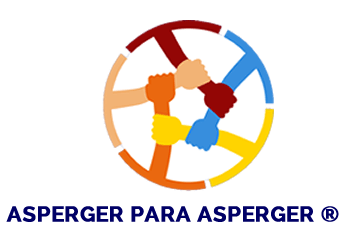

Volver al inicio

Entorno Académico y Laboral
🔄 Adaptación Laboral
Cultura organizacional, ajustes razonables y manejo de feedback
1 / 100
0 puntos
0% aciertos
Progreso de sesión
Situación
Caso #1
Anterior
Siguiente
Mezclar
Reiniciar
Consejo: Aplica esta habilidad en un ejemplo real y registra cómo te funcionó.